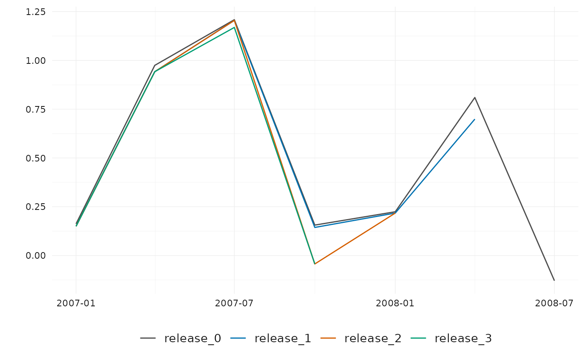

Introduction to reviser
reviser.RmdThe reviser package provides tools to manipulate and
analyze vintages of time series data subject to revisions. This vignette
demonstrates how to get started and structure your data according to the
package’s conventions.
Package conventions
The most conventional way is to represent vintage data in a real-time data matrix, where each row represents a time period and each column represents successive releases of the data. This known as the wide format. The package supports data in wide format. and assumes that the data is organized in the following columns:
-
time, the time period - Publication dates in
'yyyy-mm-dd'format or release numbers asrelease_#
While wide format is practical for inspection, data manipulation is often easier in long (tdy) format, which consists of:
-
time, the time period -
pub_dateand/orrelease, the publication date or release number -
value, the reported value. -
id, an optional column to distinguish between different series
For illustration, the package provides two datasets in long
format, gdp_us and gdp_uk. Below, we
examine GDP growth rates for the US and UK during the 2007–2009
financial crisis.
# Example long-format US GDP data
data("gdp_us")
gdp_us_short <- gdp_us %>%
ts_pc() %>%
filter(
pub_date >= as.Date("2007-01-01"),
pub_date < as.Date("2009-01-01"),
time >= as.Date("2007-01-01"),
time < as.Date("2009-01-01")
)
# Example long-format UK GDP data
data("gdp_uk")
gdp_uk_short <- gdp_uk %>%
ts_pc() %>%
filter(
pub_date >= as.Date("2007-01-01"),
pub_date < as.Date("2009-01-01"),
time >= as.Date("2007-01-01"),
time < as.Date("2009-01-01")
)
head(gdp_uk_short)
#> # A tibble: 6 × 3
#> time pub_date value
#> <date> <date> <dbl>
#> 1 2007-01-01 2007-06-01 0.683
#> 2 2007-01-01 2007-09-01 0.793
#> 3 2007-04-01 2007-09-01 0.820
#> 4 2007-01-01 2007-12-01 0.768
#> 5 2007-04-01 2007-12-01 0.841
#> 6 2007-07-01 2007-12-01 0.663Convert Long to Wide Format
To transform a dataset from long format to
wide format, use vintages_wide(). The
function requires columns time and value,
along with either pub_date or release. An
optional id column can be used to distinguish between
multiple series.
# Convert wide-format data to long format
wide_uk_short <- vintages_wide(gdp_uk_short)
head(wide_uk_short)
#> # A tibble: 6 × 8
#> time `2007-06-01` `2007-09-01` `2007-12-01` `2008-03-01` `2008-06-01`
#> <date> <dbl> <dbl> <dbl> <dbl> <dbl>
#> 1 2007-01-01 0.683 0.793 0.768 0.703 0.786
#> 2 2007-04-01 NA 0.820 0.841 0.849 0.857
#> 3 2007-07-01 NA NA 0.663 0.648 0.564
#> 4 2007-10-01 NA NA NA 0.617 0.555
#> 5 2008-01-01 NA NA NA NA 0.269
#> 6 2008-04-01 NA NA NA NA NA
#> # ℹ 2 more variables: `2008-09-01` <dbl>, `2008-12-01` <dbl>Convert Wide to Long Format
To revert to long format, use
vintages_long(). The function expects column names in
wide format to be valid dates or contain the string
"release".
# Convert back to long format
long_uk_short <- vintages_long(wide_uk_short)
head(long_uk_short)
#> # A tibble: 6 × 3
#> time pub_date value
#> <date> <date> <dbl>
#> 1 2007-01-01 2007-06-01 0.683
#> 2 2007-01-01 2007-09-01 0.793
#> 3 2007-04-01 2007-09-01 0.820
#> 4 2007-01-01 2007-12-01 0.768
#> 5 2007-04-01 2007-12-01 0.841
#> 6 2007-07-01 2007-12-01 0.663Handling Multiple Series with id
If an id column is present, vintages_wide()
returns a list with one dataset per unique
id. Conversely, vintages_long() maintains the
id column to distinguish between series.
gdp_short <- bind_rows(
gdp_uk_short %>% mutate(id = "UK"),
gdp_us_short %>% mutate(id = "US")
)
gdp_wide_short <- vintages_wide(gdp_short)
head(gdp_wide_short)
#> $UK
#> # A tibble: 7 × 8
#> time `2007-06-01` `2007-09-01` `2007-12-01` `2008-03-01` `2008-06-01`
#> <date> <dbl> <dbl> <dbl> <dbl> <dbl>
#> 1 2007-01-01 0.683 0.793 0.768 0.703 0.786
#> 2 2007-04-01 NA 0.820 0.841 0.849 0.857
#> 3 2007-07-01 NA NA 0.663 0.648 0.564
#> 4 2007-10-01 NA NA NA 0.617 0.555
#> 5 2008-01-01 NA NA NA NA 0.269
#> 6 2008-04-01 NA NA NA NA NA
#> 7 2008-07-01 NA NA NA NA NA
#> # ℹ 2 more variables: `2008-09-01` <dbl>, `2008-12-01` <dbl>
#>
#> $US
#> # A tibble: 7 × 8
#> time `2007-04-01` `2007-07-01` `2007-10-01` `2008-01-01` `2008-04-01`
#> <date> <dbl> <dbl> <dbl> <dbl> <dbl>
#> 1 2007-01-01 0.314 0.150 0.150 0.150 0.150
#> 2 2007-04-01 NA 0.835 0.942 0.942 0.942
#> 3 2007-07-01 NA NA 0.960 1.20 1.20
#> 4 2007-10-01 NA NA NA 0.159 0.144
#> 5 2008-01-01 NA NA NA NA 0.149
#> 6 2008-04-01 NA NA NA NA NA
#> 7 2008-07-01 NA NA NA NA NA
#> # ℹ 2 more variables: `2008-07-01` <dbl>, `2008-10-01` <dbl>Extracting Releases
Once data follows the package conventions, it can be analyzed
further. A common task is assessing the first release
of data, which corresponds to the diagonal of the real-time data matrix.
Use get_nth_release() to extract the nth
release. This function is 0-indexed, so the first
release corresponds to n = 0.
# Get the first release and check in wide format
gdp_releases <- get_nth_release(gdp_short, n = 0)
vintages_wide(gdp_releases)
#> Warning: Ignoring columns: release
#> $UK
#> # A tibble: 7 × 8
#> time `2007-06-01` `2007-09-01` `2007-12-01` `2008-03-01` `2008-06-01`
#> <date> <dbl> <dbl> <dbl> <dbl> <dbl>
#> 1 2007-01-01 0.683 NA NA NA NA
#> 2 2007-04-01 NA 0.820 NA NA NA
#> 3 2007-07-01 NA NA 0.663 NA NA
#> 4 2007-10-01 NA NA NA 0.617 NA
#> 5 2008-01-01 NA NA NA NA 0.269
#> 6 2008-04-01 NA NA NA NA NA
#> 7 2008-07-01 NA NA NA NA NA
#> # ℹ 2 more variables: `2008-09-01` <dbl>, `2008-12-01` <dbl>
#>
#> $US
#> # A tibble: 7 × 8
#> time `2007-04-01` `2007-07-01` `2007-10-01` `2008-01-01` `2008-04-01`
#> <date> <dbl> <dbl> <dbl> <dbl> <dbl>
#> 1 2007-01-01 0.314 NA NA NA NA
#> 2 2007-04-01 NA 0.835 NA NA NA
#> 3 2007-07-01 NA NA 0.960 NA NA
#> 4 2007-10-01 NA NA NA 0.159 NA
#> 5 2008-01-01 NA NA NA NA 0.149
#> 6 2008-04-01 NA NA NA NA NA
#> 7 2008-07-01 NA NA NA NA NA
#> # ℹ 2 more variables: `2008-07-01` <dbl>, `2008-10-01` <dbl>
# The function uses the pub_date column by default to define columns in wide
# format. Specifying the `names_from` argument allows to use the release column.
gdp_releases <- get_nth_release(gdp_short, n = 0:1)
vintages_wide(gdp_releases, names_from = "release")
#> Warning: Ignoring columns: pub_date
#> $UK
#> # A tibble: 7 × 3
#> time release_0 release_1
#> <date> <dbl> <dbl>
#> 1 2007-01-01 0.683 0.793
#> 2 2007-04-01 0.820 0.841
#> 3 2007-07-01 0.663 0.648
#> 4 2007-10-01 0.617 0.555
#> 5 2008-01-01 0.269 0.276
#> 6 2008-04-01 0.000312 0.00498
#> 7 2008-07-01 -0.648 NA
#>
#> $US
#> # A tibble: 7 × 3
#> time release_0 release_1
#> <date> <dbl> <dbl>
#> 1 2007-01-01 0.314 0.150
#> 2 2007-04-01 0.835 0.942
#> 3 2007-07-01 0.960 1.20
#> 4 2007-10-01 0.159 0.144
#> 5 2008-01-01 0.149 0.218
#> 6 2008-04-01 0.469 0.699
#> 7 2008-07-01 -0.0631 NATo assess data accuracy, we need to define the final release. Since many statistical agencies continue revising data indefinitely, the latest release is often used as a benchmark.
Use get_nth_release(n = "latest") to extract the most
recent vintage.
# Get the latest release
gdp_final <- get_nth_release(gdp_short, n = "latest")
vintages_wide(gdp_final)
#> Warning: Ignoring columns: release
#> $UK
#> # A tibble: 7 × 2
#> time `2008-12-01`
#> <date> <dbl>
#> 1 2007-01-01 0.797
#> 2 2007-04-01 0.863
#> 3 2007-07-01 0.795
#> 4 2007-10-01 0.553
#> 5 2008-01-01 0.383
#> 6 2008-04-01 0.00498
#> 7 2008-07-01 -0.648
#>
#> $US
#> # A tibble: 7 × 2
#> time `2008-10-01`
#> <date> <dbl>
#> 1 2007-01-01 0.0123
#> 2 2007-04-01 1.18
#> 3 2007-07-01 1.17
#> 4 2007-10-01 -0.0430
#> 5 2008-01-01 0.218
#> 6 2008-04-01 0.699
#> 7 2008-07-01 -0.0631Some agencies fix their data after a certain period
(e.g., Germany finalizes GDP data in August four years after the intial
release, while the UK stops revisions after 36 months). The function
get_fixed_release() extracts these fixed releases.
# Get the release three years after the initial release
gdp_uk_longer <- gdp_uk %>%
ts_pc() %>%
filter(
time >= as.Date("2000-01-01"),
time < as.Date("2006-01-01"),
pub_date >= as.Date("2000-01-01"),
pub_date <= as.Date("2006-01-01")
)
gdp_releases <- get_nth_release(gdp_uk_longer, n = 12)
gdp_releases
#> # A tibble: 11 × 4
#> time pub_date value release
#> <date> <date> <dbl> <chr>
#> 1 2000-01-01 2003-06-01 0.447 release_12
#> 2 2000-04-01 2003-09-01 0.682 release_12
#> 3 2000-07-01 2003-12-01 0.740 release_12
#> 4 2000-10-01 2004-03-01 0.303 release_12
#> 5 2001-01-01 2004-06-01 0.795 release_12
#> 6 2001-04-01 2004-09-01 0.512 release_12
#> 7 2001-07-01 2004-12-01 0.479 release_12
#> 8 2001-10-01 2005-03-01 0.351 release_12
#> 9 2002-01-01 2005-06-01 0.493 release_12
#> 10 2002-04-01 2005-09-01 0.542 release_12
#> 11 2002-07-01 2005-12-01 0.642 release_12
# Get the release from September four years after the initial release
gdp_releases <- get_fixed_release(
gdp_uk_longer,
years = 4,
month = "September"
)
gdp_releases
#> # A tibble: 7 × 3
#> time pub_date value
#> <date> <date> <dbl>
#> 1 2000-01-01 2004-09-01 1.21
#> 2 2000-04-01 2004-09-01 0.736
#> 3 2000-07-01 2004-09-01 0.700
#> 4 2000-10-01 2005-09-01 0.436
#> 5 2001-01-01 2005-09-01 0.763
#> 6 2001-04-01 2005-09-01 0.388
#> 7 2001-07-01 2005-09-01 0.332Visualizing Vintage Data
The reviser package provides simple and flexible tools
for visualizing real-time vintages. The primary function for this is
plot_vintages(), which supports multiple plot types,
including line plots, scatter plots, bar plots, and boxplots. It returns
a ggplot2 object, allowing for further customization with
the ggplot2 package.
To use plot_vintages(), provide a data frame containing:
- A time column (representing the observation period), - A
value column (containing the reported data), - A column
indicating the publication date (pub_date) or release
number (release), which determines the dimension along
which the data is visualized.
For example, to visualize how GDP estimates evolved over time, you can create a line plot comparing different vintages:
# Line plot showing GDP vintages over the publication date dimension
plot_vintages(
gdp_us_short,
title = "Real-time GDP Estimates for the US",
subtitle = "Growth Rate in %"
)
# Line plot showing GDP vintages over the release dimension
gdp_releases <- get_nth_release(gdp_us_short, n = 0:3)
plot_vintages(gdp_releases, dim_col = "release")
By default, if dim_col (the dimension along which
vintages are plotted) contains more than 30 unique values, only the most
recent 30 are displayed to maintain readability.
For further customization, you can apply custom themes and color scales using:
These functions ensure a consistent visual style tailored for vintage data analysis.
Analyzing Data Revisions and Releases
After defining the final release, we can analyze revisions and releases in multiple ways:
- Calculate revisions:
get_revisions(). See vignette Understanding Data Revisions for more details.
- Analyze the revisions:
get_revision_analysis(). See vignette Revision Patterns and Statistics for more details.
- Identify the first efficient release:
get_first_efficient_release(). See vignette Efficient Release Identification for more details.
- Nowcast future revisions:
kk_nowcast(). See vignette Nowcasting Revisions for more details.